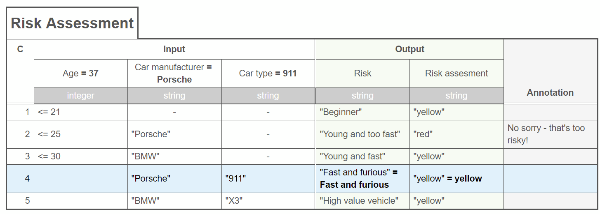
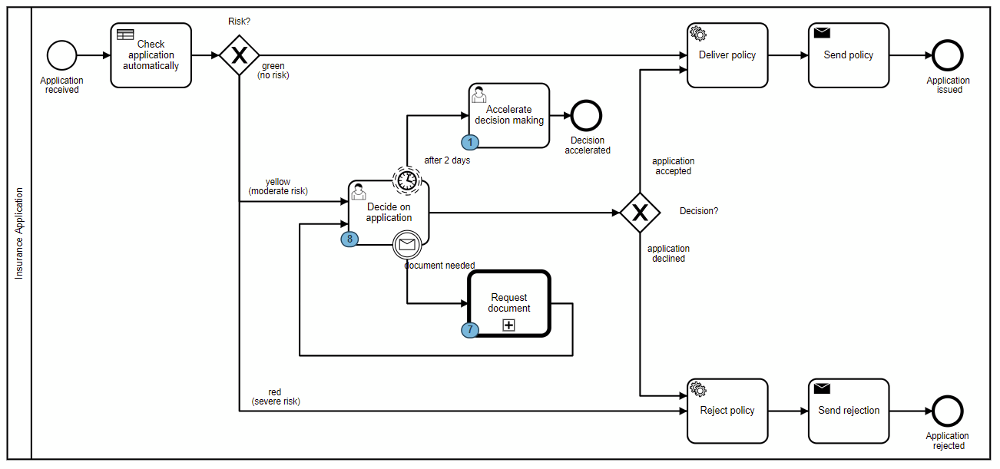

Migration preparation
Let's discuss if you need to migrate before diving into the necessary steps and what tools can help you achieve the migration.
When to migrate?
New projects should typically be started using Camunda 8.
For Camunda 7:
- Camunda 7 CE (Community Edition) will EOL (end of life) in October 2025 with a final release (v7.24) happening on Oct 14, 2025.
- There will be no more Camunda 7 CE releases after that date and the GitHub repo will be archived. The code will still be available, but we’ll close all issues and pull requests, and update the README to reflect the EOL status.
- Camunda 7 EE (Enterprise Edition) customers will continue to get patch releases (security patches & bug fixes) on a rolling basis.
If you have not yet migrated to Camunda 8, we strongly recommend that you start that process now.
Migrating to Camunda 8 gives you additional advantages if:
- You are looking to leverage a SaaS offering (e.g. to reduce the effort for hardware or infrastructure setup and maintenance).
- You are in need of performance at scale and/or improved resilience.
- You are in need of certain features that can only be found in Camunda 8 (e.g. BPMN message buffering, big multi-instance constructs, the new Connectors framework, or the improved collaboration features in Web Modeler).
Migration steps
For migration, examine development artifacts (BPMN models and application code), and workflow engine data (runtime and history) in case you migrate a process solution running in production.
The typical steps are:
- Analyze your current development artifacts with the community-supported diagram converter to gain a general overview of required steps.
- Migrate development artifacts:
- Adjust your BPMN models
- Adjust your DMN models
- Adjust your development project (remove embedded engine, add Zeebe client).
- Refactor your code to use the Zeebe API, likely via a Zeebe client.
- Refactor your glue code or use the Java delegate adapter project, a community-supported tool.
- Migrate workflow engine data.
If you follow the migration steps linearly, you can run into issues individually or one after the other. Starting with a more complete picture of what needs to be done provides a more holistic approach for your migration journey. You may find tackling a particular topic or focus area easier than trying to adjust all your BPMN models before moving to the next step.
In general, development artifacts can be migrated:
-
BPMN models: Camunda 8 uses BPMN like Camunda 7 does, which generally allows use of the same model files, but you might need to configure different extension atrributes (at least by using a different namespace). Furthermore, Camunda 8 has a different coverage of BPMN concepts that are supported (see Camunda 8 BPMN coverage vs Camunda 7 BPMN coverage), which might require some model changes. Note that the coverage of Camunda 8 will increase over time. For more details, see adjust your BPMN models.
-
DMN models: Camunda 8 uses DMN like Camunda 7 does. There are a few necessary changes in the models. Some rarely used features of Camunda 7 are not supported in Camunda 8. For more details, see adjust your DMN models.
-
CMMN models: It is not possible to run CMMN on Zeebe, CMMN models cannot be migrated. You can remodel cases in BPMN according to Building Flexibility into BPMN Models, keeping in mind the Camunda 8 BPMN coverage.
-
Application code: The application code needs to use a different client library and different APIs. This will lead to code changes you must implement.
-
Architecture: The different architecture of the core workflow engine might require changes in your architecture (e.g. if you used the embedded engine approach). Furthermore, certain concepts of Camunda 7 are no longer possible (like hooking in Java code at various places, or control transactional behavior with asynchronous continuations) which might lead to changes in your model and code.
In general, workflow engine data is harder to migrate to Camunda 8:
-
Runtime data: Running process instances of Camunda 7 are stored in the Camunda 7 relational database. Like with a migration from third party workflow engines, you can read this data from Camunda 7 and use it to create the right process instances in Camunda 8 in the right state. This way, you can migrate running process instances from Camunda 7 to Camunda 8. A process instance migration tool is in place to ease this task. This tool is community supported.
-
History data: Historic data from the workflow engine itself cannot be migrated. A tool allowing this is currently under development.
Migration tooling
We are currently developing a powerful migration toolset - expect this to be available around the 8.7 release of Camunda. For the time being, you can already rely on several migration tools.
The Camunda 7 to Camunda 8 migration tooling contains three components to help you with migration:
-
A converter available in different flavors (web app, CLI) to convert BPMN models from Camunda 7 to Camunda 8. This maps possible BPMN elements and technical attributes into the Camunda 8 format and gives you warnings where this is not possible. The result of a conversion is a model with mapped implementation details as well as hints on what changed, needs to be reviewed, or adjusted to function properly in Camunda 8.
-
The Camunda 7 Adapter. This is a library providing a worker to hook in Camunda 7-based glue code. For example, it can invoke existing JavaDelegate classes.
-
A process instance migration tool to migrate running process instances from Camunda 7 to Camunda 8. Ideally, you should let running instances finish prior to migrating.
The tools mentioned above are a good starting point.
Prepare for smooth migrations
Sometimes you might not be able to use Camunda 8 right away as described in What to do When You Can’t Quickly Migrate to Camunda 8. In this case, you will keep developing Camunda 7 process solutions, but you should establish some practices as quickly as possible to ease migration projects later on.
To implement Camunda 7 process solutions that can be easily migrated, stick to the following rules and development practices:
- Implement what we call Clean Delegates - concentrate on reading and writing process variables, plus business logic delegation. Data transformations will be mostly done as part of your delegate (and especially not as listeners, as mentioned below). Separate your actual business logic from the delegates and all Camunda APIs. Avoid accessing the BPMN model and invoking Camunda APIs within your delegates.
- Don’t use listeners or Spring beans in expressions to do data transformations via Java code.
- Don’t rely on an ACID transaction manager spanning multiple steps or resources.
- Don’t expose Camunda APIs (REST or Java) to other services or frontend applications.
- Use primitive variable types or JSON payloads only (no XML or serialized Java objects).
- Use simple expressions or plug-in FEEL. FEEL is the only supported expression language in Camunda 8. JSONPath is also relatively easy to translate to FEEL. Avoid using special variables in expressions, e.g.
executionortask. - Use your own user interface or Camunda Forms; the other form mechanisms are not supported out of the box in Camunda 8.
- Avoid using any implementation classes from Camunda; generally, those with
\*.impl.\*in their package name. - Avoid using engine plugins.
We also recommend reviewing BPMN elements supported in Camunda 8. We are actively working on closing feature gaps.
Execution Listeners and Task Listeners are areas in Camunda 8 that are still under discussion. Currently, those use cases need to be solved slightly differently. Depending on your use case, the following Camunda 8 features can be used:
- Input and output mappings using FEEL
- Tasklist API
- Operate API including historical info on processes
- Exporters
- Client interceptors
- Gateway interceptors
- Job workers on user tasks
- Job workers on service tasks
Expect to soon have a solution in Camunda 8 for most of the problems that listeners solve. Still, it might be good practice to use as few listeners as possible, and especially don’t use them for data mapping as described below.
Clean delegates
Given Java delegates and the workflow engine are embedded as a library, projects can do dirty hacks in their code. Casting to implementation classes? No problem. Using a ThreadLocal or trusting a specific transaction manager implementation? Yeah, possible. Calling complex Spring beans hidden behind a simple Java Unified Expression Language (JUEL) expression? Well, you guessed it — doable!
Those hacks are the real showstoppers for migration, as they cannot be migrated to Camunda 8. In fact, Camunda 8 increased isolation intentionally.
Concentrate on what a Java delegate is intended to do:
- Read variables from the process and potentially manipulate or transform that data to be used by your business logic.
- Delegate to business logic — this is where Java delegates got their name from. In a perfect world, you would simply issue a call to your business code in another Spring bean or remote service.
- Transform the results of that business logic into variables you write into the process.
Here's an example of a good Java delegate:
@Component
public class CreateCustomerInCrmJavaDelegate implements JavaDelegate {
@Autowired
private CrmFacade crmFacade;
public void execute(DelegateExecution execution) throws Exception {
// Data Input Mapping
CustomerData customerData = (CustomerData) execution.getVariable("customerData");
// Delegate to business logic
String customerId = crmFacade.createCustomer(customerData);
// Data Output Mapping
execution.setVariable("customerId", customerId);
}
}
Never cast to Camunda implementation classes, use any ThreadLocal object, or influence the transaction manager in any way. Java delegates should always be stateless and not store any data in their fields.
The resulting delegate can be migrated to a Camunda 8 API, or reused by the adapter provided in this migration community extension.
No transaction managers
You should not trust ACID transaction managers to glue together the workflow engine with your business code. Instead, embrace eventual consistency and make every service task its own transactional step. If you are familiar with Camunda 7 lingo, this means that all BPMN elements will be async=true. A process solution that relies on five service tasks to be executed within one ACID transaction, probably rolling back in case of an error, will make migration challenging.
Don’t expose Camunda API
You should apply the information hiding principle and not expose too much of the Camunda API to other parts of your application.
In the below example, you should not hand over an execution context to your `CrmFacade``:
// DO NOT DO THIS!
crmFacade.createCustomer(execution);
The same holds true when a new order is placed, and your order fulfillment process should be started. Instead of the frontend calling the Camunda API to start a process instance, provide your own endpoint to translate between the inbound REST call and Camunda, for example:
@RestController
public class OrderFulfillmentRestController {
@Autowired
private ProcessEngine camunda;
@RequestMapping(path = "/order", method = POST)
public ResponseEntity<StatusDto> placeOrder(@RequestBody OrderDto orderPayload) throws Exception {
// TODO: Somehow extract data from orderPayload
OrderData orderData = OrderData.from(orderPayload);
ProcessInstance pi = camunda.getRuntimeService() //
.startProcessInstanceByKey("orderFulfillment", //
Variables.putValue("order", orderData));
response.setStatus(HttpServletResponse.SC_ACCEPTED);
return ResponseEntity.accepted().body(StatusDto.of("pending"));
}
}
Use primitive variable types or JSON
Camunda 7 provides flexible ways to add data to your process. For example, you could add Java objects that would be serialized as byte code. Java byte code is brittle and also tied to the Java runtime environment.
Another possibility is transforming those objects on the fly to JSON or XML using Camunda Spin. It turned out this was black magic and led to regular problems, which is why Camunda 8 does not offer this anymore. Instead, you should do any transformation within your code before talking to the Camunda API. Camunda 8 only takes JSON as a payload, which automatically includes primitive values.
In the below Java delegate example, you can see Spin and Jackson were used in the delegate for JSON to Java mapping:
@Component
public class CreateCustomerInCrmJavaDelegate implements JavaDelegate {
@Autowired
private ObjectMapper objectMapper;
//...
public void execute(DelegateExecution execution) throws Exception {
// Data Input Mapping
JsonNode customerDataJson = ((JacksonJsonNode) execution.getVariable("customerData")).unwrap();
CustomerData customerData = objectMapper.treeToValue(customerDataJson, CustomerData.class);
// ...
}
}
This way, you have full control over what is happening, and such code is also easily migratable. The overall complexity is even lower, as Jackson is quite known to Java people — a kind of de-facto standard with a lot of best practices and recipes available.
Simple expressions and FEEL
Camunda 8 uses FEEL as its expression language. There are big advantages to this decision. Not only are the expression languages between BPMN and DMN harmonized, but also the language is really powerful for typical expressions. One of my favorite examples is the following onboarding demo we regularly show. A decision table will hand back a list of possible risks, whereas every risk has a severity indicator (yellow, red) and a description.

The result of this decision shall be used in the process to make a routing decision:

To unwrap the DMN result in Camunda 7, you could write some Java code and attach that to a listener when leaving the DMN task (this is already an anti-pattern for migration as you will read next). The code is not super readable:
@Component
public class MapDmnResult implements ExecutionListener {
@Override
public void notify(DelegateExecution execution) throws Exception {
List<String> risks = new ArrayList<String>();
Set<String> riskLevels = new HashSet<String>();
Object oDMNresult = execution.getVariable("riskDMNresult");
for (Object oResult : (List<?>) oDMNresult) {
Map<?, ?> result = (Map<?, ?>) oResult;
risks.add(result.containsKey("risk") ? (String) result.get("risk") : "");
if (result.get("riskLevel") != null) {
riskLevels.add(((String) result.get("riskLevel")).toLowerCase());
}
}
String accumulatedRiskLevel = "green";
if (riskLevels.contains("rot") || riskLevels.contains("red")) {
accumulatedRiskLevel = "red";
} else if (riskLevels.contains("gelb") || riskLevels.contains("yellow")) {
accumulatedRiskLevel = "yellow";
}
execution.setVariable("risks", Variables.objectValue(risks).serializationDataFormat(SerializationDataFormats.JSON).create());
execution.setVariable("riskLevel", accumulatedRiskLevel);
}
}
With FEEL, you can evaluate that data structure directly and have an expression on the "red" path:
= some risk in riskLevels satisfies risk = "red"
Additionally, you can even hook in FEEL as the scripting language in Camunda 7 (as explained by Scripting with DMN inside BPMN or User Task Assignment based on a DMN Decision Table).
However, more commonly you will keep using JUEL in Camunda 7. If you write simple expressions, they can be migrated automatically, as you can see in the test case of the migration community extension. You should avoid more complex expressions if possible.
Very often, a good workaround to achieve this is to adjust the output mapping of your Java delegate to prepare data in a form that allows for easy expressions.
Avoid hooking in Java code during an expression evaluation. The above listener to process the DMN result was one example of this, but a more diabolic example could be the following expression in Camunda 7:
// DON'T DO THIS:
#{ dmnResultChecker.check( riskDMNresult ) }
Now, the dmnResultChecker is a Spring bean that can contain arbitrary Java logic, possibly even querying some remote service to query whether we currently accept yellow risks or not. Such code can not be executed within Camunda 8 FEEL expressions, and the logic needs to be moved elsewhere.
Camunda Forms
Finally, while Camunda 7 supports different types of task forms, Camunda 8 only supports Camunda Forms (and will actually be extended over time). If you rely on other form types, you either need to make Camunda Forms out of them or use a bespoke tasklist where you still support those forms.